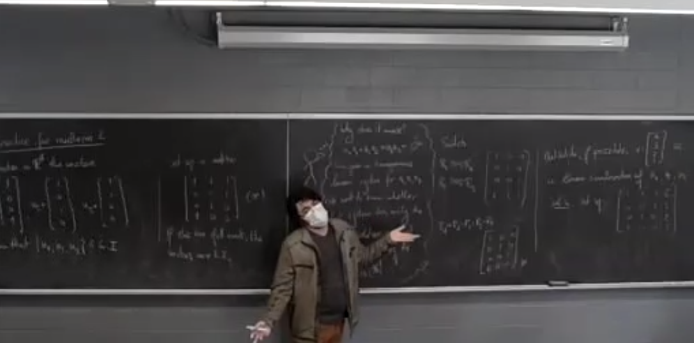

Ivo Terek
Teaching
In this page you may see my complete teaching history.
University of California, Riverside
To be announced.
Williams College
- MATH250 - Linear Algebra (Spring 2025 - Instructor).
- MATH426 - Differential Topology (Fall 2024 - Instructor). Lecture notes (209 pages).
- MATH326 - Differential Geometry (Fall 2024 - Instructor).
The Ohio State University
Awards: First-Year Distinguished Graduate Teaching Associate Award (2019), Phil Huneke Excellence in Teaching Award (2022),
Graduate Associate Teaching Award (2023).
Graduate Associate Teaching Award (2023).

The Ohio State University - March 2022
The Ohio State University - March 2022
- MATH2177 - Mathematical Topics for Engineers (Autumn 2023 - TA). Class diary (82 pages).
- MATH2177 - Mathematical Topics for Engineers (Autumn 2022 - TA). Class diary (90 pages).
- Causality and Spacetimes (Graduate Math Summer Minicourses 2022 - Instructor).
- MATH2177 - Mathematical Topics for Engineers (Spring 2022 - TA).
Class diary (75 pages). - Symplectic Geometry Crash Course (Graduate Math Summer Minicourses 2021 - Instructor). Lecture notes (86 pages).
- MATH3345 - Foundations of Higher Mathematics (Spring 2021 - Grader).
- MATH1150 - Precalculus (Autumn 2020 - TA).
- MATH1149 - Trigonometry (Spring 2020 - TA).
- MATH2173 - Engineering Mathematics B (Autumn 2019 - TA).
- MATH1152 - Calculus 2 (Spring 2019 - TA).
- MATH1151 - Calculus 1 (Autumn 2018 - TA).
University of São Paulo - March 2019
University of São Paulo
- MAT6702 - Topics in Lorentz Geometry (Spring 2019 - Instructor). Lecture notes (76 pages).
- MAT3120 - Differential and Integral Calculus III (Oceanographic Institute, Spring 2018 - TA).
- MAT5719 - Geometric Differential Calculus in $\Bbb R^n$ (Institute of Mathematics and Statistics, Winter 2018 - TA).
- MAT2454 - Differential and Integral Calculus I (Polytechnique School, Autumn 2017 - TA).
- MAT2453 - Differential and Integral Calculus I (Polytechnique School, Spring 2017 - TA).
- Linear Algebra (Summer Program, Institute of Mathematics and Statistics, Winter 2017 - TA).
- MAT0336 - Differential Geometry II (Institute of Mathematics and Statistics, Autumn 2016 - TA).
- MAT0326 - Differential Geometry I (Institute of Mathematics and Statistics, Autumn 2016 - TA).
- MAT0111 - Differential and Integral Calculus I (Oceanographic Institute, Spring 2014 - TA).
- MAE0116 - Notions of Statistics (Institute of Mathematics and Statistics, Autumn 2013 - TA).
Note: some of the older links may break with time.